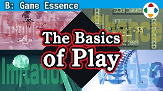
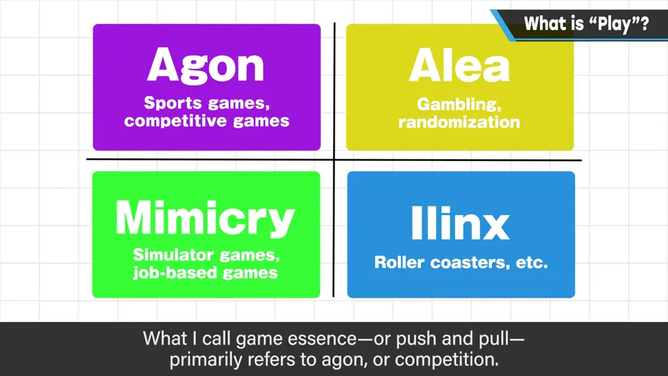
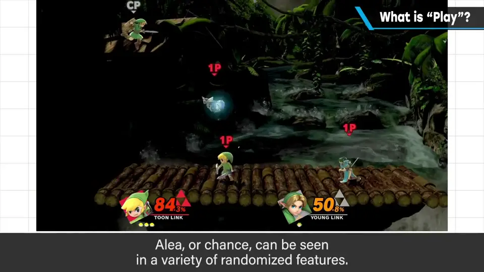
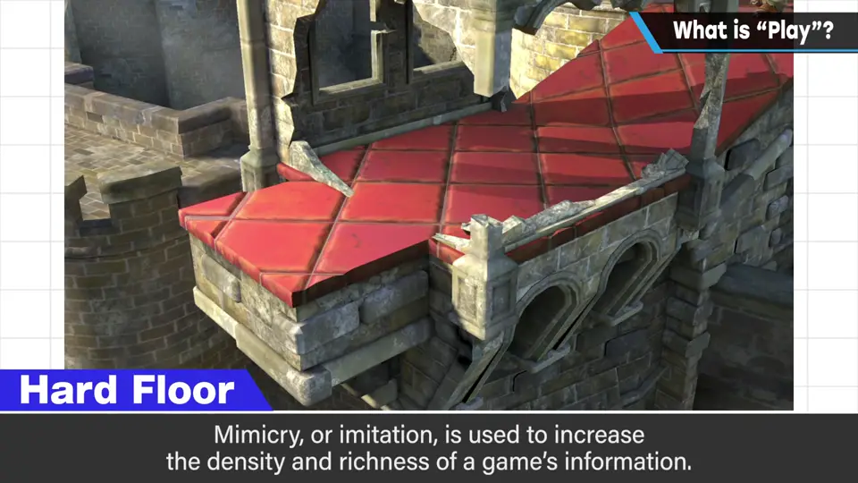
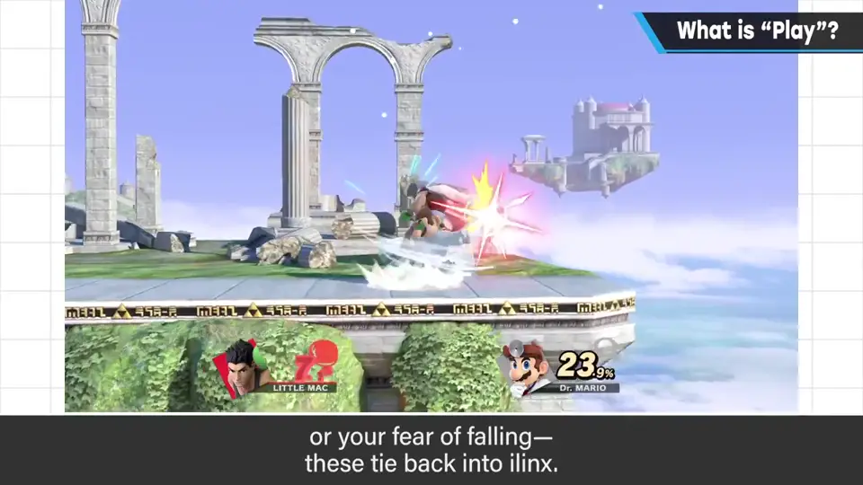
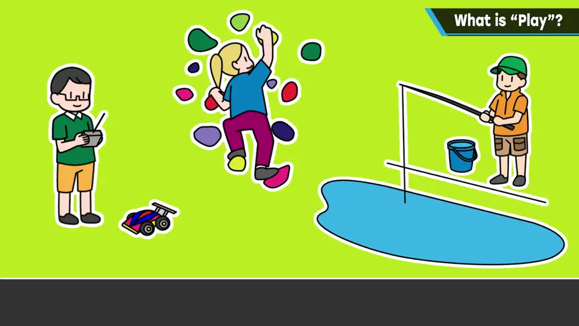

速览
人类的玩耍究竟是什么？动物也玩（樱井家的猫也会），这里先不谈。长期被引用为游戏乐趣本质解说的，是罗歇·凯卢瓦（Roger Caillois）1958 年的《游戏与人》。樱井不太喜欢直接搬用别人的思想，本频道也很少这样做，但它有用，所以介绍：玩耍有四个要素——Agon（竞争）：现代包括体育和对战游戏；Alea（偶然）：赌博、随机等；Mimicry（模拟）：模仿某物，如模拟、职业游戏；Ilinx（眩晕）：想象过山车或高速卷轴。听一下就知道全都适用于现在的电脑游戏。不能说能涵盖游戏的全部魅力，但要素分解很重要，而且有趣。樱井说的游戏性（博弈）主要指竞争——不是单纯的体能优劣，而是关键一手决定胜负。他的作品当然也有大量其他要素：随机出现的道具决定胜负（偶然）；看似坚硬的地面、大幅抡起的招式、听起来很痛的击打音，因为现实存在才能理解（模拟，增加信息量和丰富度）；蓄力后把对手畅快地打飞、对坠落的恐惧（眩晕，生理上的快感）。最后樱井补充自己的看法：玩耍像是让人获得活力、好好生活的训练——从中得到身体、精神、智力上的种种（运动、反射、思考、智力、情感、规则、社会），从小反复的玩耍带来各种无形的价值；它也不是生硬的训练，有时是疗愈。与生产和工作无关、看似无意义的事中获得喜悦，绝非无意义，而是人能像人一样生活的种种尝试。
1. 《游戏与人》的四要素 0:03
长期被当作游戏乐趣本质解说而引用的，是罗歇·凯卢瓦（Roger Caillois）1958 年的《游戏与人》。樱井不太喜欢直接搬用别人的思想，但它有用，所以介绍一下：玩耍被定义为有 4 个要素。
| 要素 | 含义 | 例 |
|---|---|---|
| Agon（竞争） | 竞争 | 体育、对战游戏 |
| Alea（偶然） | 偶然 | 赌博、随机 |
| Mimicry（模拟） | 模仿某物 | 模拟游戏、职业游戏 |
| Ilinx（眩晕） | 眩晕 | 过山车、高速卷轴 |

稍微听一下就会发现，全都适用于现在的电脑游戏。不能说它涵盖了游戏的全部魅力，但要素分解很重要，而且有趣。
2. 樱井作品里的四要素 1:22
樱井说的游戏性（博弈）主要指 Agon（竞争）：不是单纯的身体优劣，而是关键一手决定胜负。他的作品当然也包含大量其他要素：
- 偶然：使用随机的规格很多，偶然出现的道具会决定胜负；
- 模拟：增加游戏的信息量与丰富度——看起来坚硬的地面、大幅抡起的招式、听起来很痛的打击音能被理解，都因为现实存在；
- 眩晕：生理上的快感——蓄力后把对手畅快地打飞；对坠落的恐惧也与眩晕有关。



《游戏与人》的思路，也许能让你对一直视为理所当然的「玩耍的本质」有新的察觉。
3. 樱井对玩耍的看法 2:35
樱井认为，玩耍像是人获得活力、过好生活的一种训练：做些事并觉得开心，从中产生身体、精神、智力等各种东西——运动、反射、思考、智力、情感、规则以及社会。从小不经意反复的玩耍，给予人各种无形的价值。

而且玩耍本来就没有「训练」那样生硬的印象，有时还是疗愈。
自测题
1. 凯卢瓦《游戏与人》中玩耍的四要素是什么？
Agon（竞争）、Alea（偶然）、Mimicry（模拟）、Ilinx（眩晕）。 0:40
2. 樱井说的「游戏性/博弈」主要对应哪个要素？
Agon（竞争）——不是单纯的体能优劣，而是关键一手决定胜负。 1:22
3. 樱井对「玩耍」的个人看法是什么？
玩耍像让人获得活力、过好生活的训练，带来身体、精神、智力等无形价值；有时也是疗愈；看似无意义的乐趣，是人像人一样生活的尝试。 2:35